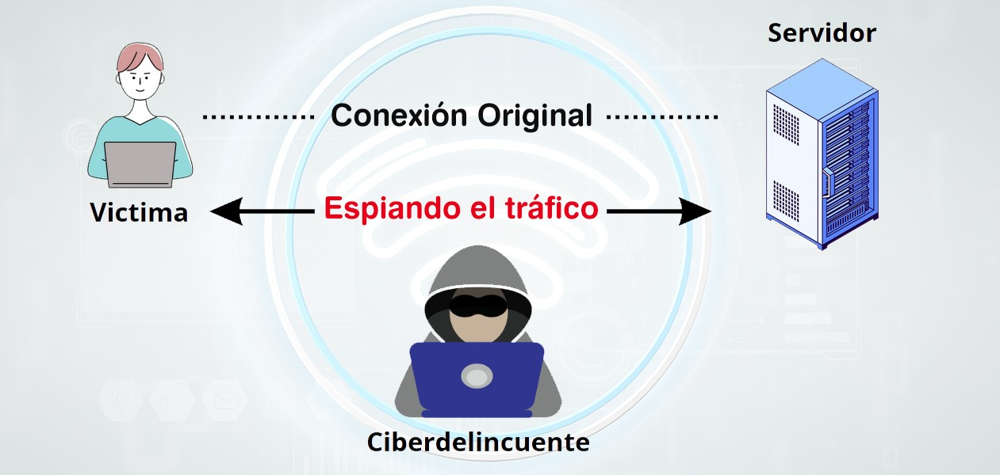

¡Hola EquipoüòÅ!
Esta semana aprenderemos sobre Redes Wifi publicas y VPN. ¡Mantente alerta!
üì° Uso Seguro de Redes Wi-Fi Públicas y VPNs: Riesgos y Protecci√≥n
Las redes Wi-Fi públicas (cafés, aeropuertos, hoteles) son peligrosas: hackers pueden robar tus datos si no te proteges. Una VPN es tu mejor escudo. Aquí te explicamos cómo navegar seguro.
⚠️ Riesgos de las Wi-Fi Públicas
- üë§ Ataque "Man-in-the-Middle" (MitM)
- Un hacker intercepta tu conexión y ve todo lo que haces: contraseñas, mensajes, tarjetas de crédito.
- Ejemplo: Inicias sesión en tu banco en un café, pero un atacante captura tus credenciales.
- üì∂ Redes Falsas ("Evil Twin")
- Crean un Wi-Fi con nombre similar al legítimo (ej: "Starbucks_Gratis" en lugar de "Starbucks_Free").
- Ejemplo: Te conectas a "Hotel_Melia_WiFi" (falso) y todo tu tráfico pasa por el hacker.
- ü¶† Malware en la Red
- Algunos hackers inyectan virus en dispositivos conectados a la misma red.
üõ°Ô∏è C√≥mo Protegerse en Wi-Fi Públicas
- ✅ Evita Acciones Sensibles
- ✅ Verifica que la Web sea HTTPS
- ✅ Activa el "Firewall" y Desactiva el Compartir Archivos
- ✅ Olvida la Red después de Usarla
üìã Comparaci√≥n: Conectar sin VPN vs. Con VPN
| Situación | ❌ Sin VPN | ✅ Con VPN |
|---|---|---|
| Navegación en HTTP | Datos visibles para hackers | Tráfico encriptado (ilegible) |
| Inicio de sesión en redes sociales | Credenciales pueden ser robadas | Información protegida |
| Transacciones bancarias | Riesgo extremo (robos financieros) | Conexión segura |
| Descarga de archivos | Posible malware | Menor riesgo (pero no 100% seguro) |
üö® Ejemplo de Ataque en Wi-Fi Público
Escenario:
- Te conectas a "McDonald's_WiFi" (falsa).
- Hackers redirigen tu acceso a facebook.com a una página clonada.
- Introduces tu usuario y contraseña... ¡Robados!
Solucion:
✔ Usa VPN para evitar redirecciones maliciosas.
✔ Revisa siempre la URL (¿es https://facebook.com?).
üí° Consejos
- No uses redes públicas para teletrabajo (si manejas datos confidenciales).
- Configura tu móvil como "hotspot" si necesitas seguridad urgente.
- Actualiza tu sistema (parches de seguridad protegen contra exploits).
üìù Cu√©ntanos qu√© aprendiste
Por favor diligencia el siguiente formulario para reforzar lo aprendido sobre Redes Wifi publicas y VPN.
Formulario de concientizacion sobre Redes Wifi publicas y VPNüì¢ Recuerda:
Si sospechas de un correo, repórtalo aquí.